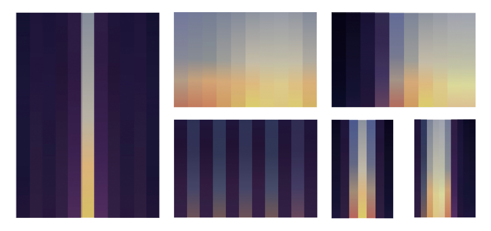

gloam.io is an interactive data visualization, that calculates—based on given latitudes—the sunrise, sunset and twilight times and creates a mesmerizing and stunning experience. watch the video
handcrafted by Nikolas Klein
Where does it come from?
It started as a student project at the HfG Schwäbisch Gmuend. The task was to create something that visualizes programmed and repeated data. I found it interesting to work with sunrise and sunset times, because not only do they change over the course of a year, but they also change differently according to your location on earth.
When I had submitted my project in July 2014, I decided to continue developing it and therefore created the interface and the touchversion.
Basic Functionality
If you tap/click in gloam.io it triggers a series of events. gloam.io calculates the latitude depending on the y-position of your tap/click in relation to the whole window height. That latitude will be transferred to a PHP-Script to calculate the sunrise, sunset and twilight times. When these times come back from the server they are used to create a gradient according to the global date and time. gloam.io interpolates between sunrise, sunset and astronomically defined twilight times to create a smooth transition.
Colors
This was one of the hardest parts of my project. gloam.io interpolates on 4 different levels between 24 colors. So there are nearly 100 different color hues which are used to create this visualization. They were handpicked by watching a lot of sunrise/sunset time-lapses and then adjusted to the overall look and feel.
Nikolas Klein, Interaction Design Student
My name is
Nikolas Klein and im a student in interaction design at the HfG in Schwäbisch Gmünd. I love what I'm doing! If you have any feedback or want to contact me—
feel free to do so!
Downloads
Download a set of cards which are ready to print …

#nicetohave / my todo list
- sharing of created visualizations (!)
- fixing rendering issues in safari and firefox
- PHP bug fixing when there is polar night/day
- possibility to delete only one element
- debounce and throttle a lot of inputs
- save skipped tutorial in cookie
- modernizr check
#done
- not calling it beta anymore (10-27-14)
- UX tweaking for mouse-input (10-27-14)
- direct feedback while trying to delete (10-19-14)
- better swipe detection when deleting (10-19-14)
- added latitude information (10-17-14)
- implement mouse input (10-16-14)
- better cross browser support (10-16-14)